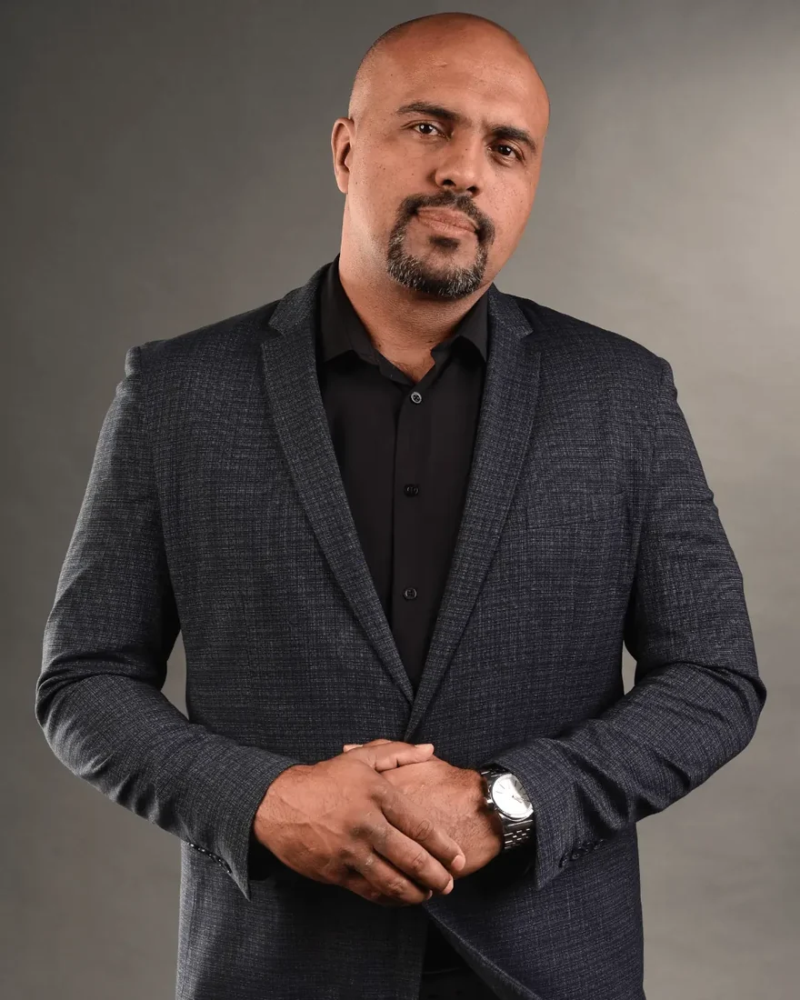

XAMAS Para filhos e filhas que não tiveram um pai
Seu pai foi embora.Ou ficou, mas nunca esteve.
Está na hora de essa falta parar de mandar na sua vida: no dinheiro, no amor e na família. A falta do seu pai não foi culpa sua. Mas acabar com ela é decisão sua.
Chega dessa falta roubar a sua vida.E você não vai fazer isso sozinho(a).
01 Você não está sozinho(a)
Essa falta é de muita gente.
E você não precisa carregá-la sozinho(a).
+160 mil
bebês brasileiros nascem todo ano sem o nome do pai na certidão.
E esse número só conta o abandono no papel. O pai que morava na mesma casa e nunca esteve de verdade não aparece em estatística nenhuma.
Fonte: Arpen-SP, com dados dos cartórios (2016 a 2024).
02 A falta, nomeada
Você carrega a falta do seu pai e quase ninguém percebe.
Talvez você viva pensando assim:
- Ele estava em casa, mas nunca estava comigo.
- Nunca ouvi um "eu te amo" dele.
- Ele pagava tudo, mas nunca conversou comigo de verdade.
- Eu ficava imaginando como ele era.
- Dia dos Pais é o dia que eu mais evito.
- Eu queria ele aqui, com todos os defeitos. Não deu tempo de dizer o que eu precisava.
- Eu nunca sou suficiente. Faço, entrego, e ainda acho que falta.
- Tenho medo de ser deixado(a). Ou eu grudo, ou eu saio antes.
- Jurei que nunca ia ser como ele. E às vezes me pego sendo.
E a falta aparece onde dói mais.
Quando você precisa provar que vale.
Quando você tem medo de ser deixado(a).
Quando você repete o que jurou nunca repetir.
03 A virada
É pesado, né? A culpa não foi sua.
Talvez você já tenha tentado ignorar. Provar que não liga. Trabalhar mais. Amar mais. Ser o melhor pai ou a melhor mãe que você consegue. Mas a falta continua.
Você era criança. Você não escolheu essa falta. Mas as consequências ficaram com você. E por isso só você pode decidir acabar com ela.
Tem que acabar em você. E o primeiro passo não precisa ser dado sozinho(a). E se esse fosse o dia do seu primeiro passo?
04 O que você leva
O que o XAMAS: Acaba em Mim abre para você
Um dia sério, com base, para a falta do seu pai parar de mandar em você.
Base 1Bíblico
A presença de Deus e a paternidade dEle transformam a vida de quem cresceu sem pai. É o que a Palavra afirma, e é o que o Raffa viveu.
A Bíblia chama Deus de Pai dos órfãos (Salmo 68:5), mostra o Pai que corre ao encontro do filho que volta para casa (Lucas 15) e dá ao filho o lugar de filho (Romanos 8:15). E fala de corações de pais e filhos que se voltam um para o outro (Malaquias 4:6).
A pesquisa conversa com isso: um estudo de 2013 com 119 cristãos (Bucknell) mostrou que pessoas com pouca segurança com os pais ainda relataram um vínculo seguro e íntimo com Deus, o que sugere um papel reparador da fé.
Base 2Científico
A ciência já mediu o peso dessa falta. A evidência mais forte é sobre a saúde mental, e ela acompanha o adulto.
Quem cresceu com a falta do pai não está exagerando, nem é fraco. Está carregando algo que a pesquisa mede e confirma.
Base 3Psicológico
Princípios de psicologia e inteligência emocional. Como funcionam o apego, o luto e o perdão, e por que o adulto de 40 anos ainda reage como o menino de 8.
O que você vem buscar, e o que esse dia abre para você:
Clareza
Você vai entender de onde vem o que sente e por que ainda dói, depois de tantos anos.
Alívio
Você vai começar a soltar o peso de carregar a falta do seu pai sozinho(a).
Liberdade nas suas relações
Você vai ver onde a falta ainda decide por você, no dinheiro, no amor e na família, e começar a retomar o comando.
Perdão que liberta
Você vai conhecer um perdão com método, que não exige que você volte a conviver nem que finja que não doeu.
Identidade de filho(a)
Você vai descobrir o que a Palavra de Deus diz sobre o Pai que não falha, e quem você é para Ele.
Uma decisão
Você vai sair com um compromisso concreto e uma palavra para os seus filhos (ou para a criança que você foi). Para o ciclo acabar em você.
Um dia não faz tudo. Mas o primeiro passo cabe em um dia.
A decisão de essa ferida acabar em você vai mudar tudo.
O resto do caminho continua depois.
- Das 09h às 20h, em Brasília
- Equipe de cuidado e sala de acolhimento abertas o dia todo
- Kit do evento
- Grupo de continuidade por 30 dias e lista de profissionais de saúde mental
Ninguém é obrigado a falar em público.
05 Para quem é
O XAMAS: Acaba em Mim é para você que:
Se você se reconheceu em pelo menos 2 itens, esse dia é para você.
Se você está em crise emocional agora, em tratamento psiquiátrico, ou sofreu violência ou abuso do seu pai, a sua inscrição passa antes por uma conversa com a nossa equipe. Isso é para proteger você.
- Teve um pai que foi embora, ou que nunca conheceu
- Teve um pai que ficou em casa, mas nunca esteve de verdade
- Perdeu o pai e ainda carrega o que ficou sem ser dito
- Sente que nunca é suficiente, mesmo fazendo tudo certo
- Tem medo de ser deixado(a), ou foge antes de ser deixado(a)
- Percebe que a falta do pai aparece no dinheiro, no amor ou na família
- É pai ou mãe e não quer repetir o que doeu
- Está cansado(a) de fingir que não liga
06 Inscrição
Garanta o seu lugar no XAMAS: Acaba em Mim
Venha acompanhado(a)
3 convites
12x R$ 20,37
ou R$ 197,00 à vista
R$ 65,67 por pessoa. Você economiza R$ 94.
Sim, acaba em mim. Quero 3 convitesCada pessoa convidada passa por uma triagem rápida e assina o termo de ciência. O evento é espiritual e educativo e não substitui terapia.
Pix e cartão de crédito, em até 12 vezes. Almoço e lanche não estão incluídos.
07 Conversa sincera
Vou ser sincero com você. O XAMAS não cura ninguém em um dia.
Ninguém cura. O caminho continua depois, com o grupo de 30 dias e com ajuda profissional, se for preciso.
O que o dia não faz
Sem obrigação.
- Você não vai ser obrigado(a) a falar em público.
- Você não vai ser obrigado(a) a chorar.
- Você não vai ser levado(a) a procurar o seu pai.
O que um dia faz
O primeiro passo.
- Clareza sobre o que você sente.
- Perdão com método.
- O seu lugar de filho(a).
- O primeiro passo.
Perdoar não é voltar a conviver. Se ele te feriu de verdade, você pode perdoar e manter distância. Mas uma coisa eu sei: a falta do seu pai não vai acabar sozinha. Alguém precisa decidir acabar com ela.
Tem que acabar em você.
08 Quem conduz o dia
Eu sou o Raffa Nunes. Eu cresci sem pai.

Minha mãe me teve aos 17 anos, e meu pai foi embora. Fui criado com muito amor pela minha avó, pela minha mãe, pela minha tia e pelos meus tios. Mesmo assim, a falta de um pai ficou.
Ela me acompanhou por muitos anos: no medo de não ser suficiente, na necessidade de provar o meu valor, nos meus relacionamentos.
Fui pastor de jovens e servi 9 anos como pastor e líder numa igreja. Passei por 7 meses de terapia, oração, consagração e jejum para cuidar do meu coração.
Hoje sou pai de três filhas. Decidi que o que me faltou não ia faltar para elas.
Eu não sou terapeuta. Sou um filho que atravessou isso e que recebeu de Deus o chamado de ajudar outros a atravessar.
Não vim ensinar ninguém a ser pai. Vim dizer que essa ferida, essa falta, acabou em mim: deixou de roubar a minha ousadia, a minha coragem, a minha família, os meus negócios e o projeto de Deus para a minha vida. Eu tomei uma decisão, e Deus curou essa ferida em mim.
E assim como essa falta acabou em mim, eu estou aqui para te ajudar a também ACABAR EM VOCÊ. Chega dessa ferida roubar os presentes e as promessas de Deus para a sua vida.
Acaba em mim.
Garanta o seu lugar no XAMAS: Acaba em Mim
19/12 · 09h às 20h · Brasília
Venha acompanhado(a)
3 convites
12x R$ 20,37
ou R$ 197,00 à vista
R$ 65,67 por pessoa
Sim, acaba em mim. Quero 3 convitesA inscrição inclui triagem rápida e termo de ciência. Pix e cartão de crédito.
09 Antes de se inscrever
Perguntas frequentes.
Funciona para mim, se meu pai ficou em casa?
Sim. Muita gente teve um pai presente no endereço e ausente no coração. Essa falta também é falta, e o dia é para você.
E se meu pai morreu?
O dia também é para você. Quem perdeu o pai carrega saudade e coisas que ficaram sem ser ditas, e isso tem lugar aqui.
É terapia?
Não. O evento é espiritual e educativo e não substitui acompanhamento psicológico ou psiquiátrico. Existe equipe de cuidado e uma sala de acolhimento aberta o dia todo. No fim, você recebe uma lista de profissionais.
Vou ter que falar em público ou contar a minha história?
Não. Ninguém é obrigado a falar. Os exercícios escritos são só seus.
E se eu passar mal ou ficar muito abalado(a)?
Você pode sair a qualquer momento e ir para a sala de acolhimento. A equipe de cuidado fica o dia todo, e cuida de você até o fim.
O meu pai me machucou de verdade. Vão me pedir para perdoar ou procurar ele?
Não. Perdoar não é reconciliar, não é confiar de novo e não é voltar a conviver. Ninguém vai te levar a procurar quem te feriu. Na inscrição, você pode contar que sofreu isso, e a equipe conversa com você antes.
É só para cristãos?
Não. Todos são bem-vindos. A ferida da falta de um pai não tem religião, e não é preciso ter religião para participar: o dia é para qualquer pessoa que queira vencer essa ferida. A Palavra de Deus é a fonte que usamos para trabalhá-la, junto com princípios bíblicos, científicos e psicológicos.
Como funcionam os 3 convites?
Por R$ 197 você garante 3 lugares, para quem você quiser levar: irmão, irmã, amigo, cônjuge. Cada pessoa faz a sua triagem rápida e assina o seu termo de ciência.
Qual a forma de pagamento? É seguro?
Pix e cartão de crédito, em até 12 vezes, em plataforma certificada.
Como recebo as informações do evento?
Depois da inscrição e da triagem, você recebe por e-mail o local exato, o que levar e os horários.
E se eu estiver em crise agora?
Ligue para o CVV, 188 (24 horas, gratuito). Em emergência, SAMU, 192. Você não precisa esperar o dia 19.